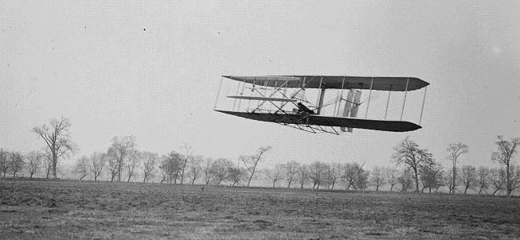
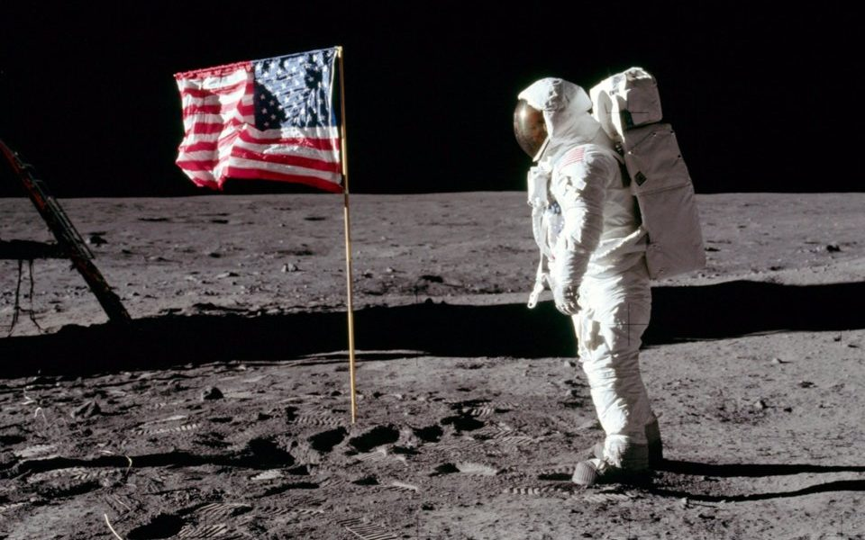

Explore The Planets

This is a photo of our solar system, stop and have a look at the planets.
This is a photo of our solar system, stop and have a look at the planets.
Humanity's journey to understand the universe didn't start in deep space—it started right here on Earth. Our obsession with exploration took a massive leap forward on December 17, 1903, when the Wright brothers made history by flying the world's first successful motor-operated airplane, the Wright Flyer, in Kitty Hawk, North Carolina. This breakthrough forever changed how we connect with our own planet and laid the foundational dream of reaching even higher.

This is a real picture took at the testing of the first models of airoplane
Less than 70 years after that historic flight, humankind did the seemingly impossible by leaving Earth entirely. On July 20, 1969, NASA's Apollo 11 mission successfully landed on the lunar surface, and Neil Armstrong became the first person to step onto the Moon. His iconic words, "That's one small step for [a] man, one giant leap for mankind," still inspire generations of scientists, dreamers, and developers to push past the limits of what is possible.

This is the first time people reached the Moon